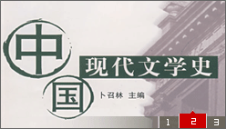
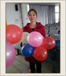

- 中国作家网公布了第六届.....
- 四川大学文学与新闻学院...
- 本届鲁迅文学奖采取实名投..
- 周啸天诗词选《将进茶》获诗歌奖
- 我校蒲公英文学社成员...
- 王蒙先生担任学院名誉院长...
- 四川大学文学与新闻学院历史悠久
- 乐山师范学院欢迎你
- 地 址：XXXXXXX
- 电 话：XXXXXXXXXXXXXXX
- 咨询QQ：1345761494
- 邮 箱：XXXXXXXX
- 网 址：XXXXXXXXXXXXXXXX

如果将中国文学史比作一条长河，我们从下游向上追溯，它的源头是一片浑茫的云天，不可详辨。我们找不到一个起源的标志，也不能确定起源的年代。 那口传时代的文学，应当是十分久远的。
后来的文字记载不过是对那段美丽梦幻的 追忆而已。最保守的说法，从公元前11世纪，也就是《诗经》中的一些诗篇出 明朗起来了，后来逐渐汇纳支流，变得越来 越宽广。、中古期、近古期。三古之分，是中国文学史大的时代断限……
更多>>

我是一名乐山师范学院的学员，我叫曾彦琳。我的性格偏于内向，为人坦率、 热情、讲求原则；处事乐观、专心、细致、头脑清醒；富有责任心、乐于助人。 我还是一个正直忠诚、勤奋求实的人，会不断追求人格的自我完善；明显的特点是 乐观自信、温和开朗、稳重宽厚，因此，我人际关系和谐，适应环境能力较强。
爱好电脑、科普知识，喜欢钻研，正因为这些增强了我的实干精神，习惯事情或 问题及早解决。最大的满足感在于该做的事顺利完成，以便有精力去关注其他，...
更多>>